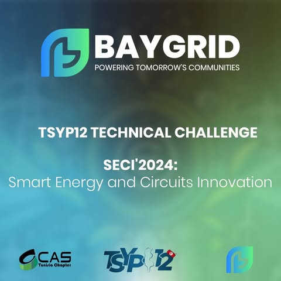
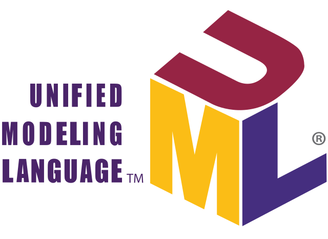

BAYGRID
un project revolutionnaire sur l'idee de cree un monde intelligent base sur l'energie renouvlable , ici BAYGRID propse une solution revolutionnaire pour generer de l'energie renouvlable et l'optimisation dans nos maison tout en traitant la technologie SMART GRID
PFE
Développement d'un système de gestion de l'énergie pour une maison résidentielle afin d'optimiser l'utilisation de l'énergie photovoltaïque. Mise en œuvre d’une distribution intelligente d’énergie vers les batteries stationnaires et les bornes de recharge pour véhicules électriques. Contrôle du système à l'aide d'une carte Raspberry Pi pour une gestion efficace en temps réel. Connecté le système à une application mobile, permettant aux utilisateurs de surveiller et de suivre leur consommation d'énergie.

simulation de communication entre 2 CAN
Étudiez l'architecture globale des systèmes électroniques automobiles, y compris les unités de commande électroniques (ECU) et la manière dont elles communiquent entre elles. Création d'un programme C++ pour envoyer et recevoir des messages CAN (Controller Area Network) à l'aide de sockets sous Linux

UML
Modélisation d'un système d'avertissement de collision frontale à l'aide du langage de modélisation unifié (UML)
